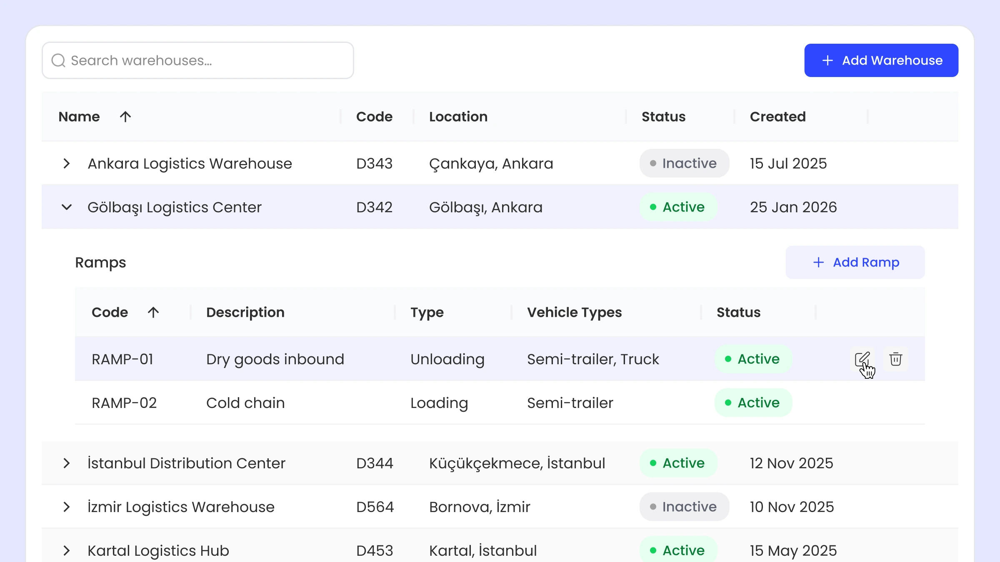
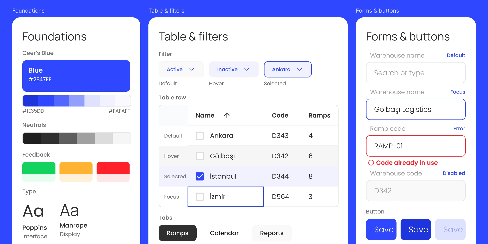
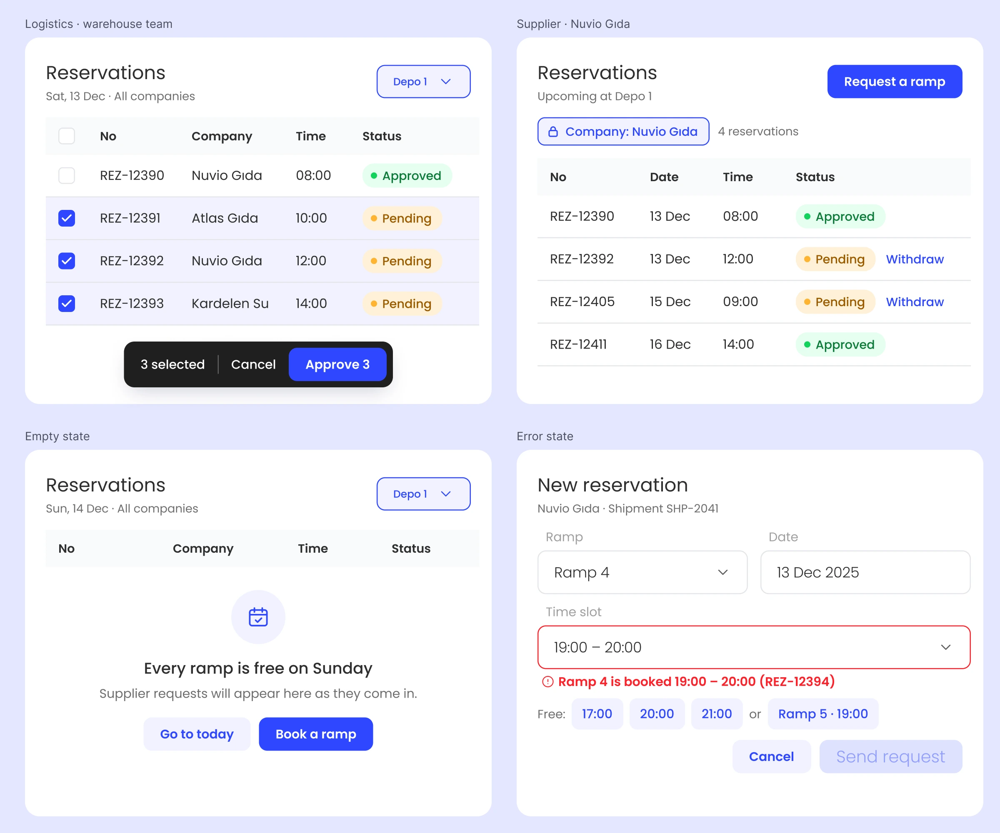
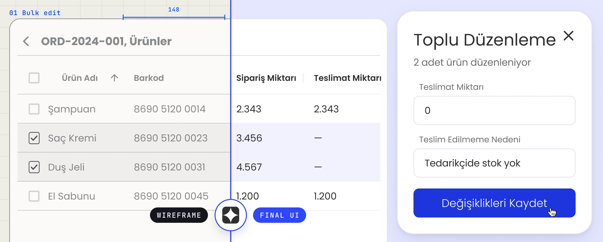
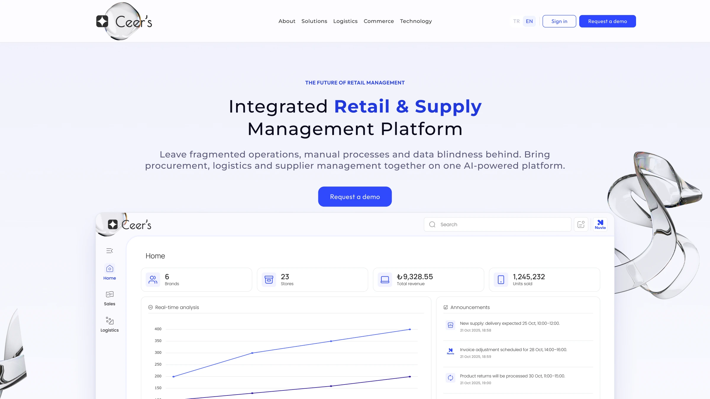

Four user types, one system.
Ceer's connects retailers and suppliers across FMCG operations. We started with nothing — no flows, no screens, no brand. Logistics, stock, ramp reservations, agreements and reporting all had to live in one interface, for four different kinds of user.
Role
Product Designer — UX, UI, brand, landing page
Studio
Das Mione — my design studio
Scope
0 → 1 platform · component library · landing page · pitch deck
Focus
Information architecture · Complex flows · Design systems · Responsive dashboard
Live
ceershub.com ↗ — in production

A platform this wide either has a spine or a settings page for every disagreement
Four user types — system admin, supplier, company user, logistics — each needing a different slice of the same data. Sales reporting and KPIs, CRM analytics, invoicing, ramp reservation, shipments, warehouses, tender and agreement management: each one a module, and each one with a different idea of who was allowed to see what.
I worked with the owners and the technical team to walk real usage scenarios end to end before anything was drawn. This was the longest phase and the one that decided everything after it.

Resisting grey
The fork: B2B logistics software has a strong gravitational pull toward grey — it is the safe, legible, invisible choice, and every competitor takes it.
What I chose: a saturated blue carrying the whole system, on a light interface, with colour reserved for state rather than decoration. Dense data then reads as considered rather than heavy, and a status is recognisable before it is read. The brand and the densest screen in the product were decided against each other in the same pass, not in sequence, because a palette that survives a marketing page and dies in a twelve-column table is not a palette.
What it cost: TODO: where the colour strategy hurt — a module that fought it, or a screen where grey would have been easier.

Built while the front end was watching
The fork: design ahead of engineering and hand over finished screens, or work in the open and let the library be the contract.
What I chose: the second, and the cadence proves it. Early on we synced weekly, because the project was moving fast and screens were landing every week. Every new page got a quick call before it was built, so nothing went in on an assumption. As the patterns settled the library started growing on its own — a new page was mostly existing parts — and the calls went to fortnightly, then monthly, because the detail was already in Figma.
In between, I was checking the front end on the test environment continuously. On a product with this many modules, the cost of design and code drifting apart compounds weekly: the further in you are, the more expensive it is to go back and fix all of it. Catching a difference the week it appears costs an afternoon. Catching it four modules later costs a sprint.
What it bought: engineering never had to argue with what I handed them, and I never had to redraw something that had already shipped wrong.

The module that didn't fit anything we had built
The situation: mid-project, a whole new area arrived — warehouse shipments. It needed a calendar, reservations against it, an approval path, and shipment detail underneath. Nothing in the product so far looked remotely like it; every other module was a table, a filter and a form.
The fork: force it into the patterns we already had, which would have kept the library clean and made the flow worse, or extend the system with components that existed nowhere else in it.
What I chose: extend. New components and new interactions, designed against the real-world sequence rather than the screen inventory — because a ramp booking is a physical event with a truck attached to it, and the interface either matches how that works or people go back to phoning each other. The test for every new piece was whether the actual flow fits through it, not whether it matched the rest of the file.
What it cost: the library got wider, and a wider library is more to keep consistent. The alternative was a module people worked around.

The landing page, and the deck that sells it
Once the flows were settled I stepped in as landing-page and pitch-deck designer too. Simple structure, strong product visuals, bilingual — the page leans on the interface itself rather than on stock illustration. Designing the marketing page after the product rather than before meant it could promise exactly what the thing does.
A complex operation, with one place to run it.
Ceer's went from no flows and no screens to a working platform at ceershub.com, with a component library the team keeps building on, a responsive dashboard, and a landing page that shows the product rather than describing it.